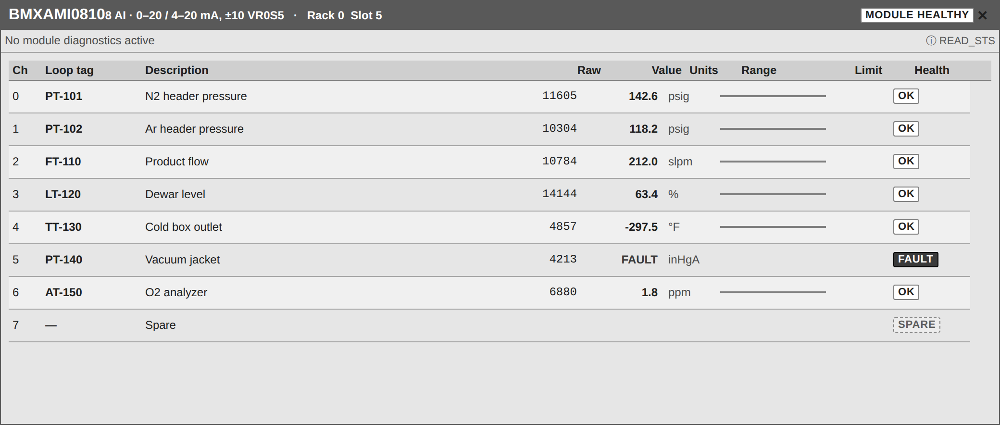

<figure class="card" id="Templates_IO_Faceplates_BMXAMI0810"><div class="view" style="width:240px;height:102px"><div class="stage" style="width:1040px;height:442px;transform:scale(0.2308)"><div class="hit" style="position:absolute;inset:0;pointer-events:none" title="click: open dynamic window"></div></div></div><figcaption><code>Templates/IO/Faceplates/BMXAMI0810</code><br><b class="ok">native:x80 device DDT</b> &middot; dynamic window <code>dw_IOCard</code><br>click symbol: open dynamic window<br><i>render of the real view</i></figcaption></figure>